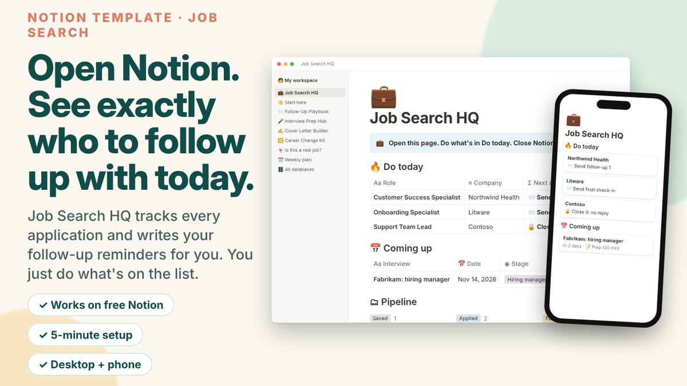
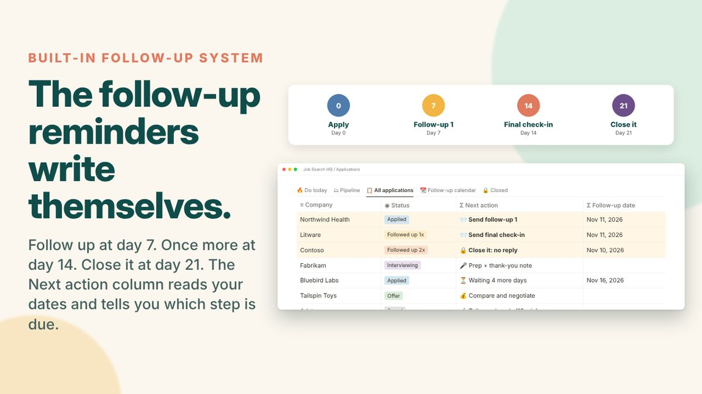
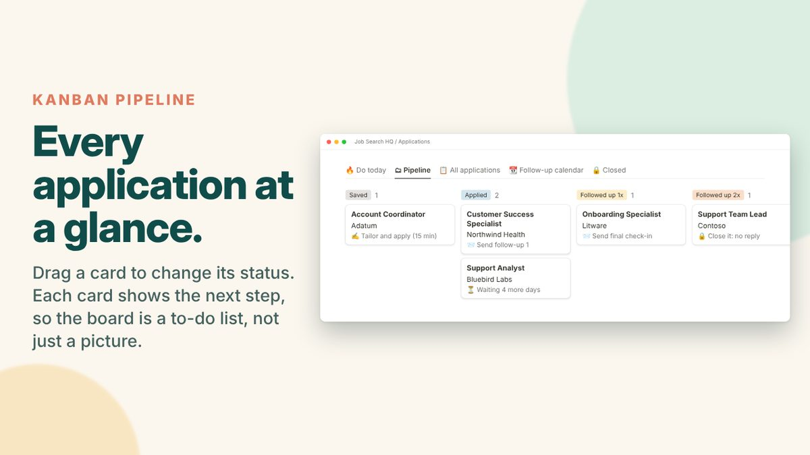
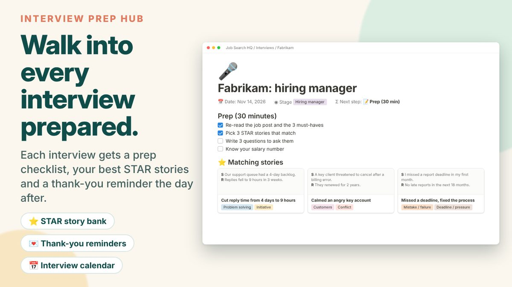
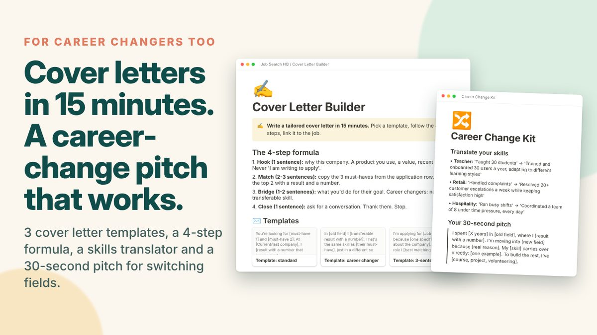
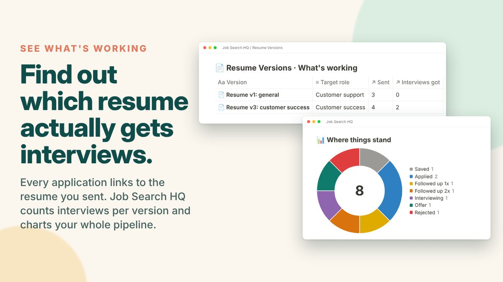

Job Search HQ: Notion Job Application Tracker
A Notion job tracker with automatic follow-up reminders, interview prep and a cover letter builder.
Instant download. Pay once, print as often as you like.

Open Notion. See exactly who to follow up with today.
Most job trackers fail the same way. You spend more time updating them than applying. The "follow-up date" column reminds nobody. And three weeks later a recruiter calls and you can't remember which resume you sent them.
Job Search HQ is a Notion template that does the remembering for you. You log a job in 2 minutes. It writes your next step, lists today's follow-ups and keeps every interview, cover letter and contact linked to the right job.
How it works
- Add a job with 4 fields: Role, Company, Status, Applied on. Everything else is optional.
- Job Search HQ writes the next step for you: "Send follow-up 1" at day 7, "Send final check-in" at day 14, "Close it: no reply" at day 21.
- Open the HQ page, do what's in Do today, close Notion. That's your whole system.
What's inside
- 💼 HQ dashboard: Do today, upcoming interviews, a Kanban pipeline and a status chart, on one page
- 📌 Applications database with automatic Next action, Follow-up date and Days waiting formulas
- 🎤 Interviews with a prep checklist on every interview and a thank-you reminder the day after
- ⭐ STAR Story Bank: write your best stories once, tag them by skill, reuse them in every interview
- 📄 Resume Versions: see the interview rate of each resume, so you know which one to keep sending
- ✍️ Cover Letter Builder: a 4-step formula and 3 templates (standard, career changer, 3-sentence)
- 📨 Follow-Up Playbook with 12 copy-and-paste emails: follow-ups, thank-yous, referrals, recruiter replies, salary negotiation
- 🔀 Career Change Kit: a skills translator, a 30-second pitch script and bridge-project ideas
- 🤝 Contacts with a "nudge due" reminder, 👻 a ghost-job check, 🔁 weekly reviews with an hours cap
- 🎁 Bonus PDF: the Job Search Swipe File, with every email, letter and script, to print or keep offline
Made for
- Job seekers who apply to more than a handful of jobs and keep losing track
- Career changers who need to explain the switch and translate their experience
- Anyone who already lives in Notion (or wants a reason to start: no Notion skills needed)
Prefer paper or Google Sheets? Get the printable Job Search Planner & Tracker instead. Same 7/7/close system.
FAQ
Does it work on the free Notion plan? Yes. Every database, formula and view works on the free plan.
Do I need to know Notion? No. Click Duplicate, follow the 5-minute Start Here page, and add your first job.
Does it work on my phone? Yes, in the Notion app. Do today and the Pipeline board work well on mobile.
I already track jobs in a spreadsheet. Import it with Notion's Merge with CSV, then let the formulas take over.
Is this a subscription? No. One payment, yours to keep and change.
How do I get it? Right after checkout you get the Duplicate link and the bonus PDF.
A planning tool, not a promise: it can't guarantee interviews or offers. Notion is a trademark of Notion Labs, Inc.; this template is not made or endorsed by Notion.





Not sure yet? Start with the free kit.
Free Job Application Follow-Up Kit: a few pages from the same system, free to download and print.
Download the free kit